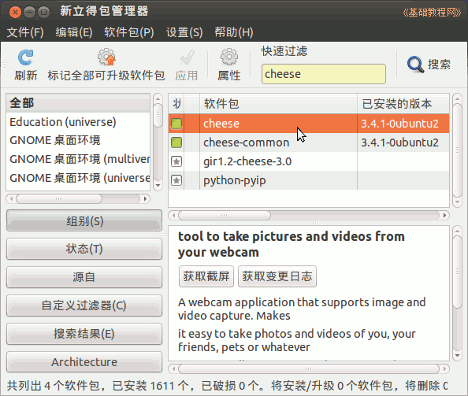
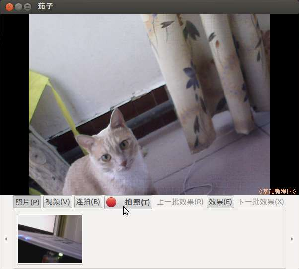
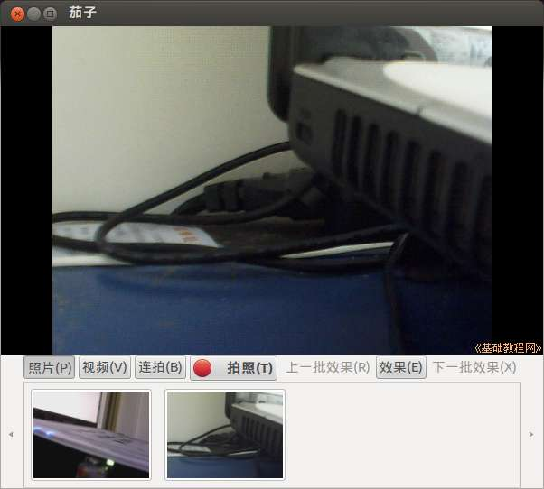
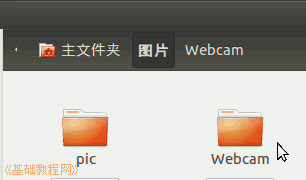
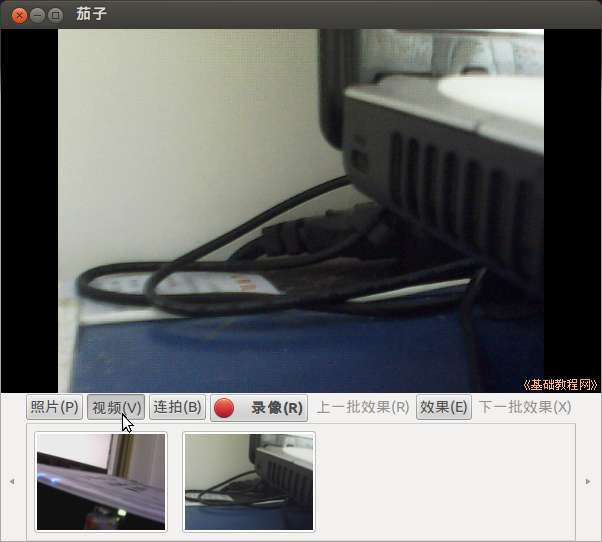
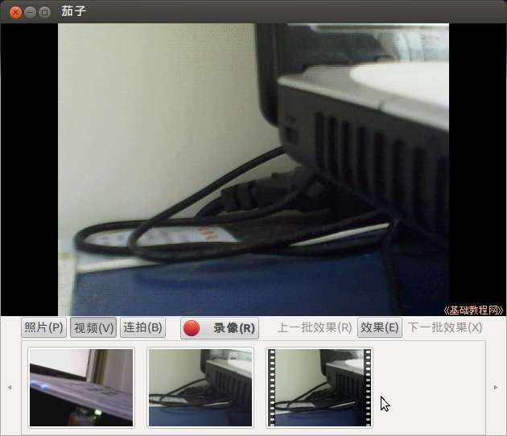

Ubuntu 入门操作指南
作者：TeliuTe 来源：基础教程网
四十六、茄子大头贴 返回目录 下一课使用它，你可以用摄像头拍照片或录制视频；
1、茄子大头贴
1）在软件中心或新立得中搜索安装 cheese，详细操作请参阅 第10课 或 第15课；

2）点击主按钮，在搜索中输入 cheese ，打开程序，或者依次点“主按钮、所有程序、过滤结果、媒体、茄子大头贴”；

3）检测到摄像头以后，就会在窗口中显示图像，点击“拍照”按钮，就可以拍下一幅照片；

4）拍下的照片列出在下文，点右键可以打开它，文件存放在“主文件夹－图片－Webcam”文件夹中；

5）点击下边的“视频”标签，可以录制视频，；

6）录制的视频存放在“主文件夹－视频－Webcam”中；

本节学习了茄子大头贴的基础知识，如果你成功地完成了练习，请继续学习下一课内容；
本教程由86团学校TeliuTe制作|著作权所有
基础教程网：http://teliute.org/
美丽的校园……
转载和引用本站内容，请保留作者和本站链接。